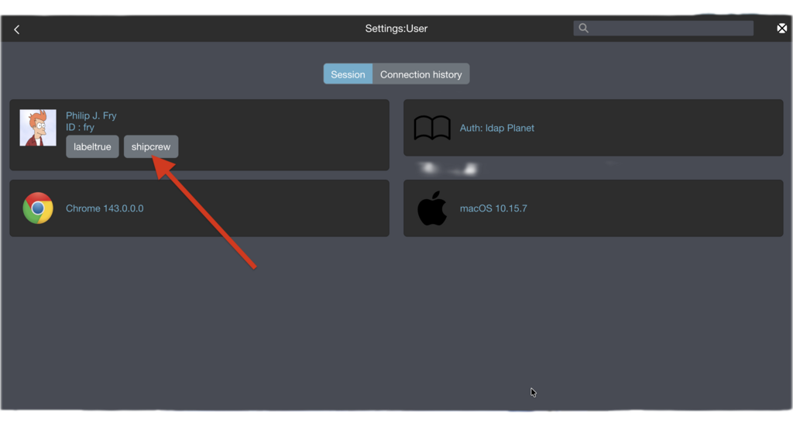
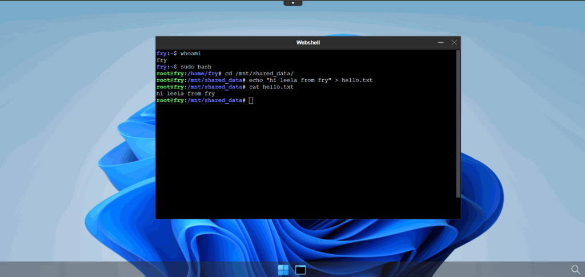
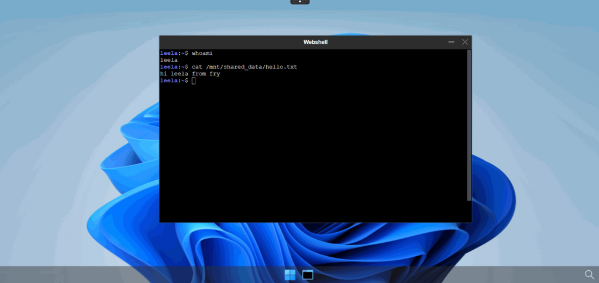
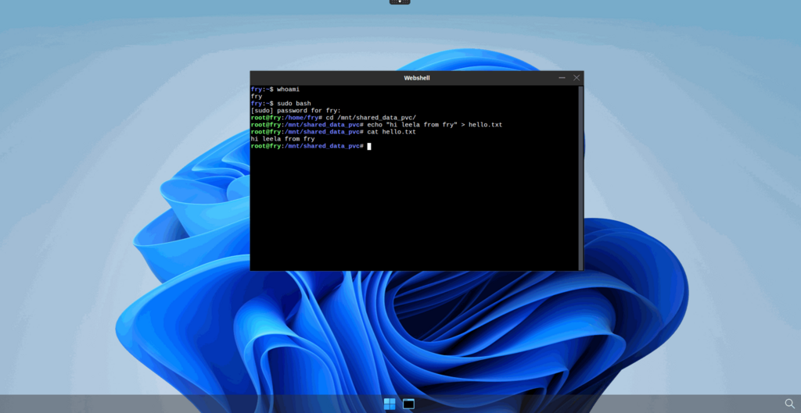
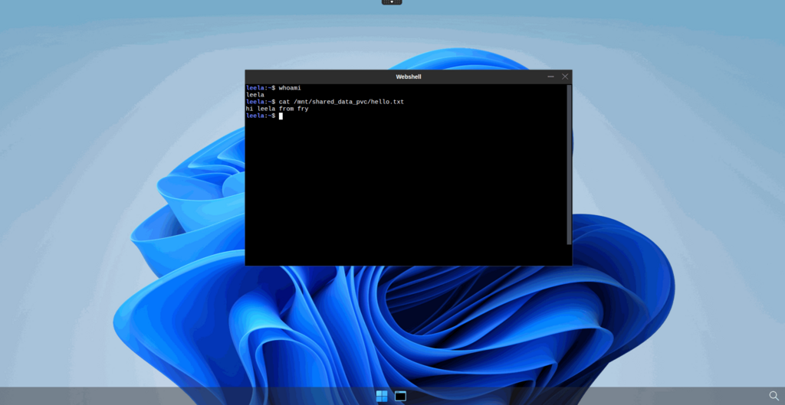

Shared Volumes
Users may need to access shared files across sessions or desktops. This page describes two methods for mounting a shared directory inside user pods: using hostPath for node-local storage, and using a PersistentVolumeClaim backed by an NFS server for cluster-wide accessibility. Access to shared volumes is controlled through rules defined in desktop.policies.
Check your rules in authmanagers ldapconfig
Note
The ldapconfig for the demo LDAP server adds a few default rules. To get more information about the ldap server read the docker-test-openldap web page.
The user Philip J. Fry is a member of the group ship_crew.
Details of the ship_crew group cn=ship_crew,ou=people,dc=planetexpress,dc=com
| Attribute | Value |
|---|---|
| objectClass | Group |
| cn | ship_crew |
| member | cn=Turanga Leela,ou=people,dc=planetexpress,dc=com |
| member | cn=Philip J. Fry,ou=people,dc=planetexpress,dc=com |
| member | cn=Bender Bending Rodríguez,ou=people,dc=planetexpress,dc=com |
ldapconfig : {
'planet': {
'default' : True,
'ldap_timeout' : 15,
'ldap_protocol' : 'ldap',
'ldap_basedn' : 'ou=people,dc=planetexpress,dc=com',
'servers' : [ 'openldap' ],
'secure' : False,
'serviceaccount': { 'login': 'cn=admin,dc=planetexpress,dc=com', 'password': 'GoodNewsEveryone' },
'policies': {
'acls': None,
'rules' : {
'rule-dummy' : {
'conditions' : [ {'boolean':True, 'expected':True } ],
'expected' : True,
'label':'labeltrue'
},
'rule-ship': {
'conditions' : [ { 'memberOf': 'cn=ship_crew,ou=people,dc=planetexpress,dc=com', 'expected' : True } ],
'expected' : True,
'label':'shipcrew'
},
'rule-test': {
'conditions' : [ { 'memberOf': 'cn=admin_staff,ou=people,dc=planetexpress,dc=com', 'expected' : True } ],
'expected' : True,
'label': 'adminstaff'
}
}
} } }
This provider defines three rules:
labeltruealways for all usersshipcrewif the user is member ofcn=ship_crew,ou=people,dc=planetexpress,dc=comgroupadminstaffif the user is a member ofcn=admin_staff,ou=people,dc=planetexpress,dc=comgroup
Open your web browser and log in as Philip J. Fry in your abcdesktop web service.
- Open the
Menu|Usertab

When Philip J. Fry is logged in, Philip J. Fry gets the labels labeltrue and shipcrew.
Define volume using hostPath
Update od.config file
Add rules to the desktop.policies dictionary
desktop.policies: {
'rules': {
'volumes': {
'shipcrew': {
'type': 'hostPath',
'name': 'mntmyproject',
'path': '/mnt',
'mountPath': '/mnt/shared_data'
}
},
'network': {}
},
'acls' : {} }
On your worker node, make sure that the
/mntdirectory exists.
This policy adds a new volume mntmyproject defined as a hostPath to the user's pod and mounts it as /mnt/shared_data.
Save your od.config file.
Apply the new config file
Replace the previous ConfigMap:
NAMESPACE=abcdesktop
kubectl create -n $NAMESPACE configmap abcdesktop-config --from-file=od.config -o yaml --dry-run=client | kubectl replace -n $NAMESPACE -f -
Expected output:
configmap/abcdesktop-config replaced
Restart pyos to apply the new ConfigMap:
NAMESPACE=abcdesktop
kubectl rollout restart deployment pyos-od -n $NAMESPACE
Expected output:
deployment.apps/pyos-od restarted
Your new configuration is now active.
Restart a new desktop as Philip J. Fry
- Create a new desktop for
Philip J. Fry - Get the name of the
Philip J. Frypod
NAMESPACE=abcdesktop
kubectl get pods -l type=x11server -n $NAMESPACE
NAME READY STATUS RESTARTS AGE
fry-06c5f 4/4 Running 0 3m24s
- Describe the
Philip J. Frypod, and look for theMountsandVolumesentries
NAMESPACE=abcdesktop
kubectl desribe pods fry-06c5f -n $NAMESPACE
The mount for hostpath-mntmyproject-fry is mapped to /mnt/shared_data.
Mounts:
/etc/sudoers.d from sudoers (rw)
/home/fry from home (rw)
/home/fry/.cache from cache (rw)
/mnt/shared_data from hostpath-mntmyproject-fry (rw)
/run/user/ from runuser (rw)
/tmp from tmp (rw)
/tmp/.X11-unix from x11socket (rw)
/tmp/.cupsd from cupsdsocket (rw)
/var/lib/extrausers from extrausers (rw)
/var/log/desktop from log (rw)
/var/run/dbus from rundbus (rw)
/var/run/desktop from run (rw)
/var/secrets/abcdesktop/vnc from auth-vnc-fry (rw)
The volume hostpath-mntmyproject-fry is defined as
hostpath-mntmyproject-fry:
Type: HostPath (bare host directory volume)
Path: /mnt
HostPathType: DirectoryOrCreate
A new mount /mnt/shared_data from hostpath-mntmyproject-fry (rw) is added, backed by the HostPath volume hostpath-mntmyproject-fry pointing to /mnt.
Check that your file system's permissions are set to your users
The volume hostpath-mntmyproject-fry is also mounted for applications ephemeral containers and pods.
-
Start the
webshellapplication in the web interface -
Now create a file inside the
/mnt/shared_datafolder, for examplehello.txt

Start a new desktop as Turanga Leela
Now start a desktop as Turanga Leela. As a member of the shipcrew group, you should see the file you created with Philip J. Fry.

Define volume using pvc bounded on nfs server
Note
For this part of the tutorial, you should have an NFS server already configured. If not, please follow the first chapter of this tutorial.
Create nfs type PersistentVolume
You must first create an NFS-type PersistentVolume bound to your NFS server.
The following YAML defines an NFS-type PersistentVolume. Save it as nfs-pv-shared-data-abcdesktop.yaml:
apiVersion: v1
kind: PersistentVolume
metadata:
name: shared-shipcrew-pv
spec:
capacity:
storage: 1Gi
accessModes:
- ReadWriteMany
persistentVolumeReclaimPolicy: Retain
storageClassName: ""
claimRef: # Define here claimName and namespace for bounding your PVC
name: shared-shipcrew-pvc
namespace: abcdesktop # You can replace it by your abcdesktop namespace if different
nfs:
path: /data/nfs_share/shared_data_shipcrew
server: X.X.X.X # Here goes your nfs server IP address
Apply it by running the following command:
kubectl apply -f nfs-pv-shared-data-abcdesktop.yaml
Create PersistentVolumeClaim
With the PersistentVolume created and bound to the NFS server, create a PersistentVolumeClaim to reference the shared-shipcrew-pv PersistentVolume.
Save the following content to a nfs-pvc-shared-data-abcdesktop.yaml file:
apiVersion: v1
kind: PersistentVolumeClaim
metadata: # This matches the claimRef field of the PV yaml file
name: shared-shipcrew-pvc
namespace: abcdesktop # Or your abcdesktop namespace if different
spec:
accessModes:
- ReadWriteMany
resources:
requests:
storage: 1Gi
storageClassName: ""
volumeName: shared-shipcrew-pv # Name of your persistent volume
Warning
Setting accessModes to ReadWriteMany is required. Without it, the PVC cannot be mounted simultaneously across multiple user pods, which defeats the purpose of shared storage.
Apply it by running the following command:
NAMESPACE=abcdesktop
kubectl apply -f nfs-pvc-shared-data-abcdesktop.yaml -n $NAMESPACE
Verify that both the PV and PVC have been correctly bound:
NAMESPACE=abcdesktop
kubectl get pvc -n $NAMESPACE
NAME STATUS VOLUME CAPACITY ACCESS MODES STORAGECLASS VOLUMEATTRIBUTESCLASS AGE
shared-shipcrew-pvc Bound shared-shipcrew-pv 1Gi RWX <unset> 67m
kubectl get pv
NAME CAPACITY ACCESS MODES RECLAIM POLICY STATUS CLAIM STORAGECLASS VOLUMEATTRIBUTESCLASS REASON AGE
shared-shipcrew-pv 1Gi RWX Retain Bound abcdesktop/shared-shipcrew-pvc <unset> 3h11m
Update od.config file
Add rules to the desktop.policies dictionary
desktop.policies: {
'rules': {
'volumes': {
'shipcrew': {
'type': 'pvc',
'name': 'shared-shipcrew-pvc',
'claimName': 'shared-shipcrew-pvc',
'mountPath': '/mnt/shared_data_pvc'
}
},
'network': {}
},
'acls' : {} }
On your worker node, make sure that the
/mntdirectory exists.
This policy adds a new volume shared-shipcrew-pvc defined as a pvc to the user's pod and mounts it as /mnt/shared_data_pvc.
Save your od.config file.
Apply the new config file
Replace the previous ConfigMap:
NAMESPACE=abcdesktop
kubectl create -n $NAMESPACE configmap abcdesktop-config --from-file=od.config -o yaml --dry-run=client | kubectl replace -n $NAMESPACE -f -
Expected output:
configmap/abcdesktop-config replaced
Restart pyos to apply the new ConfigMap:
NAMESPACE=abcdesktop
kubectl rollout restart deployment pyos-od -n $NAMESPACE
Expected output:
deployment.apps/pyos-od restarted
Your new configuration is now active.
Restart a new desktop as Philip J. Fry
- Create a new desktop for
Philip J. Fry - Get the name of the
Philip J. Frypod
NAMESPACE=abcdesktop
kubectl get pods -l type=x11server -n $NAMESPACE
NAME READY STATUS RESTARTS AGE
fry-06c5f 4/4 Running 0 3m24s
- Describe the
Philip J. Frypod, and look for theMountsandVolumesentries
kubectl desribe pods fry-06c5f -n abcdesktop
The mount for pvc-shared-shipcrew-pvc-fry is mapped to /mnt/shared_data_pvc.
Mounts:
/etc/sudoers.d from sudoers (rw)
/home/fry from home (rw)
/home/fry/.cache from cache (rw)
/mnt/shared_data_pvc from pvc-shared-shipcrew-pvc-fry (rw)
/run/user/ from runuser (rw)
/tmp from tmp (rw)
/tmp/.X11-unix from x11socket (rw)
/tmp/.cupsd from cupsdsocket (rw)
/var/lib/extrausers from extrausers (rw)
/var/log/desktop from log (rw)
/var/run/dbus from rundbus (rw)
/var/run/desktop from run (rw)
/var/secrets/abcdesktop/vnc from auth-vnc-fry (rw)
The volume pvc-shared-shipcrew-pvc-fry is defined as
pvc-shared-shipcrew-pvc-fry:
Type: PersistentVolumeClaim (a reference to a PersistentVolumeClaim in the same namespace)
ClaimName: shared-shipcrew-pvc
ReadOnly: false
A new Mount is defined as /mnt/shared_data_pvc from pvc-shared-shipcrew-pvc-fry (rw) and the volume pvc-shared-shipcrew-pvc-fry is defined as a PersistentVolumeClaim referencing shared-shipcrew-pvc.
Check that your file system's permissions are set to your users
The volume pvc-shared-shipcrew-pvc-fry is also mounted for applications ephemeral containers and pods.
-
Start the
webshellapplication in the web interface -
Now create a file inside the
/mnt/shared_data_pvcfolder, for examplehello.txt

Start a new desktop as Turanga Leela
Now start a desktop as Turanga Leela. As a member of the shipcrew group, you should see the file you created with Philip J. Fry.

Info
Note that you should be able to see hello.txt on your NFS server too.